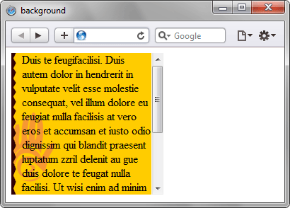

background
Универсальное свойство background позволяет установить одновременно до пяти характеристик фона. Значения могут идти в любом порядке, браузер сам определит, какое из них соответствует нужному свойству. Для подробного ознакомления смотрите информацию о каждом свойстве отдельно. Допустимо, также, указывать параметры сразу нескольких фонов, перечисляя их через запятую.
Краткая информация
| Значение по умолчанию | transparent || none || repeat || scroll || 0% 0% |
|---|---|
| Наследуется | Нет |
| Применяется | Ко всем элементам |
Синтаксис
background: [<фон>, ]* <последний_фон>Здесь:
<фон> = [background-attachment || background-image || background-position || background-repeat]
<последний_фон> = [background-attachment || background-color || background-image || background-position || background-repeat]
Если наряду с фоновыми изображениями требуется задать цвет фона элемента, он указывается в последнюю очередь после перечисления.
Значения
Любые комбинации пяти значений, разделяемых между собой пробелом, определяющих стиль фона, в произвольном порядке. Ни одно значение не является обязательным, поэтому неиспользуемые можно опустить.
Пример
<!DOCTYPE html>
<html>
<head>
<meta charset="utf-8">
<title>background</title>
<style>
div {
height: 200px; /* Высота блока */
width: 200px; /* Ширина блока */
overflow: auto; /* Добавляем полосы прокрутки */
padding-left: 15px; /* Отступ от текста слева */
background: url(images/hand.png) repeat-y #fc0; /* Цвет фона,
путь к фоновому изображению и
повторение фона по вертикали */
}
</style>
</head>
<body>
<div>
Duis te feugifacilisi. Duis autem dolor in hendrerit in vulputate velit esse molestie
consequat, vel illum dolore eu feugiat nulla facilisis at vero eros et accumsan et
iusto odio dignissim qui blandit praesent luptatum zzril delenit au gue duis dolore
te feugat nulla facilisi. Ut wisi enim ad minim veniam, quis nostrud exerci taion
ullamcorper suscipit lobortis nisl ut aliquip ex en commodo consequat. Duis te
feugifacilisi per suscipit lobortis nisl ut aliquip ex en commodo consequat.
</div>
</body>
</html>Результат данного примера показан ниже (рис. 1).

Рис. 1. Вид фона и фонового рисунка в блоке фиксированного размера
<!DOCTYPE html>
<html>
<head>
<meta charset="utf-8">
<title>background</title>
<style>
body {
background: url(images/hand.png) repeat-y,
#fc0 url(images/bg-right.png) repeat-y 100% 0;
}
</style>
</head>
<body>
</body>
</html>Объектная модель
Объект.style.background
Спецификация
| Спецификация | Статус |
|---|---|
| CSS Backgrounds and Borders Module Level 3 | Возможная рекомендация |
| CSS Level 2 (Revision 1) | Рекомендация |
| CSS Level 1 | Рекомендация |
Браузеры
| Internet Explorer | Chrome | Opera | Safari | Firefox | |
| один фон | 4 | 1 | 3.5 | 1 | 1 |
| несколько фонов | 9 | 1 | 10.5 | 1.3 | 3.6 |
| Android | Firefox Mobile | Opera Mobile | Safari Mobile | |
| один фон | 2.1 | 1 | 10 | 3.2 |
| несколько фонов | 2.1 | 1 | 10 | 3.2 |